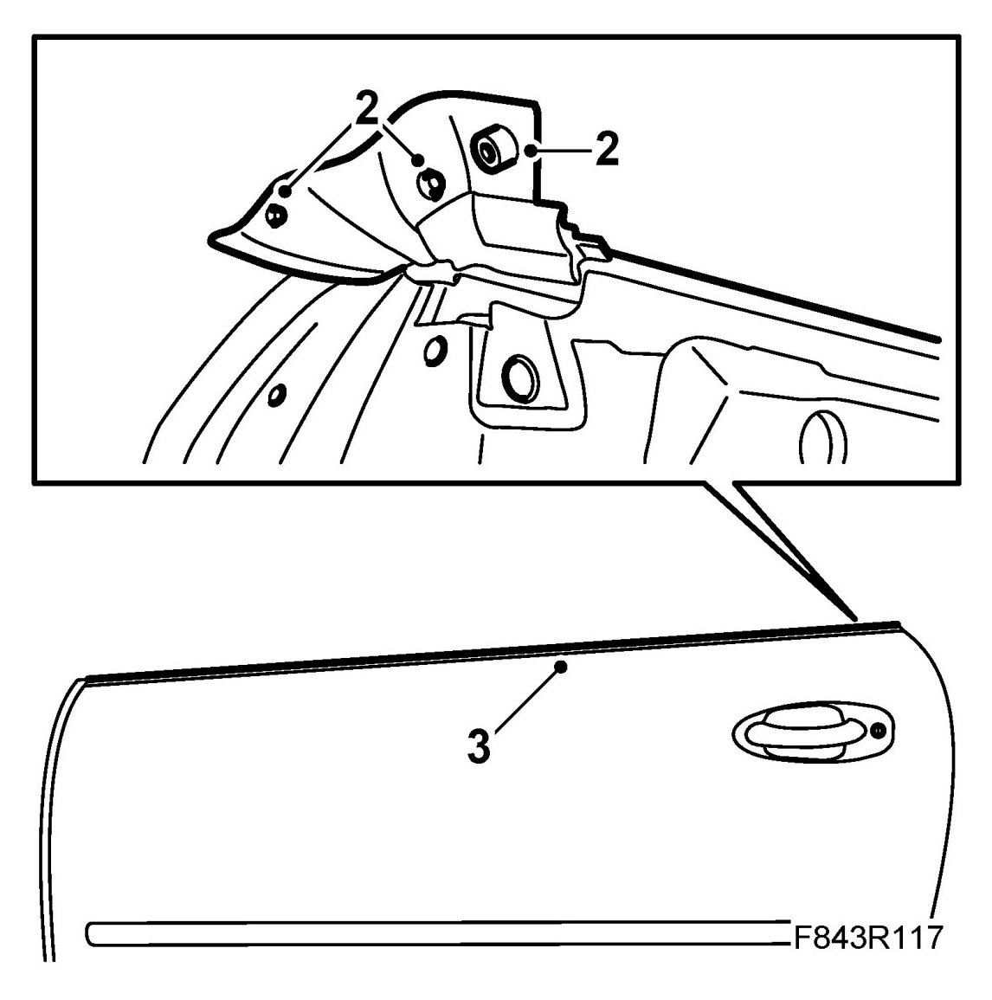
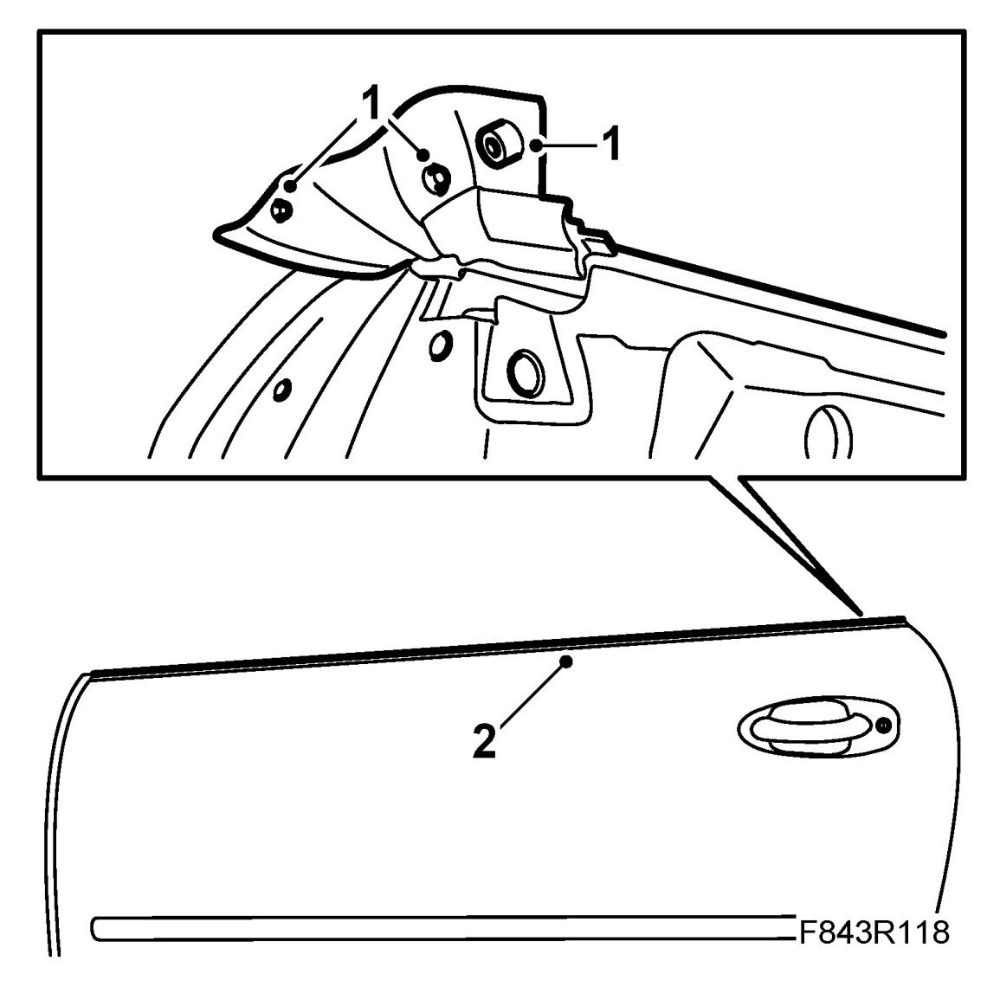

Outer Weatherstrip, Door, CV
Outer Weatherstrip, Door, CV
To remove
1. Remove Door trim, CV, Door mirror, CV and Door mirror mount with seal, CV
2. Carefully pull out the fixing plugs from the rear portion of the outer weatherstrip.

3. Lift up and remove the outer weatherstrip.
To fit
1. Locate the outer weatherstrip in position and push the fixing plugs into place. Check that the flap is correctly positioned.

2. Push the weatherstrip into place, working from the rear and forwards.
3. Fit Door trim, CV, Door mirror, CV and Door mirror mount with seal, CV
4. Cars with pinch protection: Perform Calibration of pinch protection.